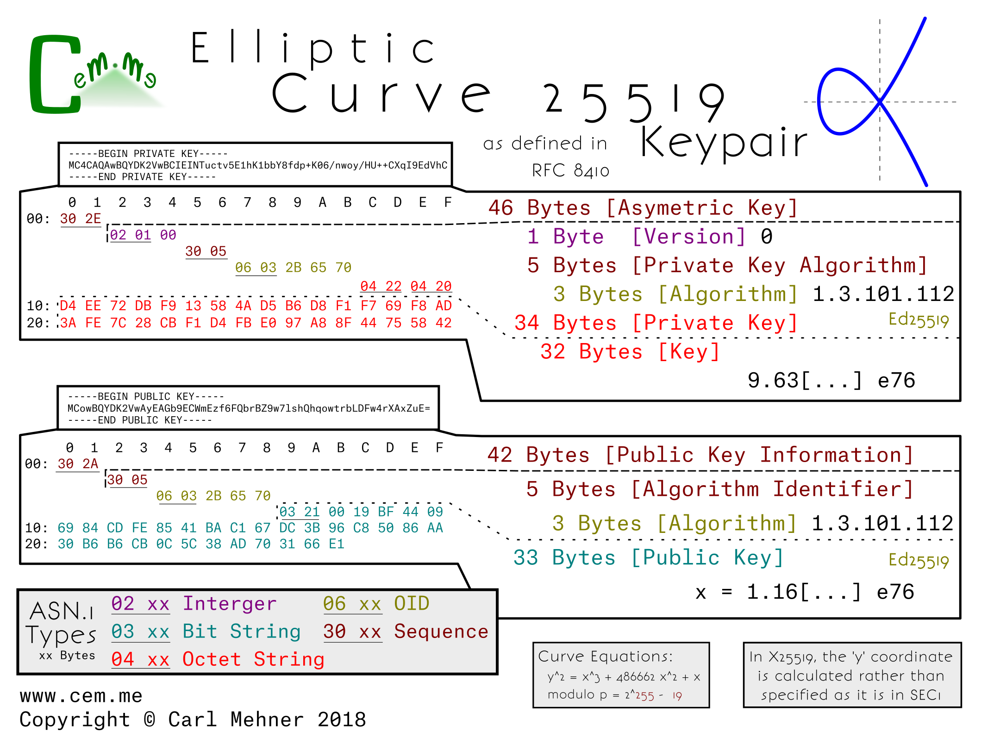

In the previous post, all of the curves were based on the same encoding type from the Standards for Efficient Cryptography (SEC).
These two curves are encoded differently; moving away from the SEC-style encodings, the x25519 and x448 (or "Goldilocks") curves are newer curves and have recently been standardized by the IETF. The next step for wider spread adoption of these curves within the TLS ecosystem, such as using them as the key for TLS certificates, is to get them approved by the CA/Browser Forum as an acceptable key type (which could possibly also require support by HSM manufactures). Afterwards, browsers or other clients or servers would need to add support.
Looking at the actual encoded keys, there is one form for the public and one for the private key. This means that the structure for encoding x25519 public and private keys is identical to the keys in x448.
The private key structure is contained in the typical sequence wrapper and begins with a version indicator (currently at 0), followed by the private key algorithm OID wrapped in an ASN.1 sequence, and finally the private key (simply a large random number), encoded as an octet string wrapped in an octet string.
The public key structure is likewise a sequence wrapper containing an algorithm OID inside a sequence, followed by a bit string containing the x coordinate of the public key. As is possible in the SEC encoded keys, just the x coordinate is encoded in both x25519 and x448 public keys and leave the party utilizing the public key to reconstitute the y coordinate as needed.
X25519 is used in nearly three quarters the key exchanges on parts of the Internet today. Of course, this new x25519 RFC allows a standard way to encode the key for use in certificates.

X448 on the other hand, has less implementations, and may take a bit longer to gain popularity.

How might this look in an X.509 certificate for use in the Web PKI? For one thing, these curves could be used in places where a very small, yet still-as-strong certificate is desired. Notice the x25519 cert below (from the RFC) is only 304 bytes, while the leaf certificate for Google’s homepage is nearly 2 kilobytes.
-----BEGIN CERTIFICATE-----
MIIBLDCB36ADAgECAghWAUdKKo3DMDAFBgMrZXAwGTEXMBUGA1UEAwwOSUVURiBUZX
N0IERlbW8wHhcNMTYwODAxMTIxOTI0WhcNNDAxMjMxMjM1OTU5WjAZMRcwFQYDVQQD
DA5JRVRGIFRlc3QgRGVtbzAqMAUGAytlbgMhAIUg8AmJMKdUdIt93LQ+91oNvzoNJj
ga9OukqY6qm05qo0UwQzAPBgNVHRMBAf8EBTADAQEAMA4GA1UdDwEBAAQEAwIDCDAg
BgNVHQ4BAQAEFgQUmx9e7e0EM4Xk97xiPFl1uQvIuzswBQYDK2VwA0EAryMB/t3J5v
/BzKc9dNZIpDmAgs3babFOTQbs+BolzlDUwsPrdGxO3YNGhW7Ibz3OGhhlxXrCe1Cg
w1AH9efZBw==
-----END CERTIFICATE-----